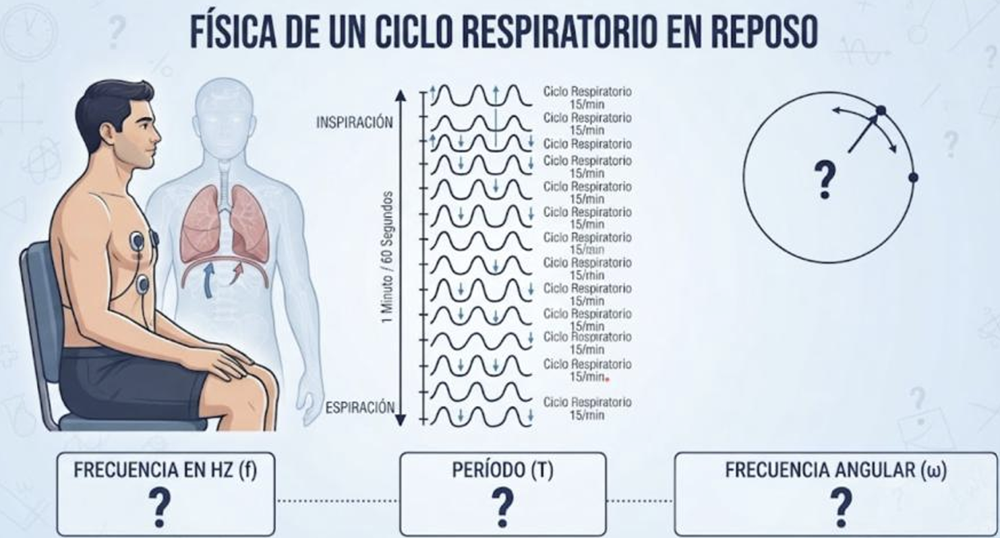

Desarrollo - Escenario 1 (Reposo)
📊 Datos iniciales: 15 respiraciones / 60 s
Paso 1: Frecuencia en Hercios (f)
f = 15 / 60 = 0,25 Hz
Paso 2: Cálculo del Período (T)
T = 1 / 0,25 = 4 s
Paso 3: Frecuencia Angular (ω)
ω = 2 × 3,1416 × 0,25 = 1,57 rad/s
